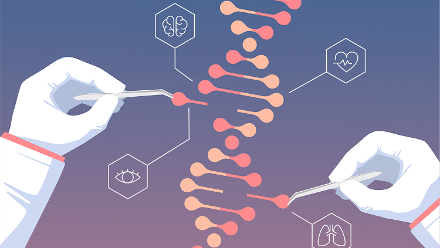

Homepage
Learn the basics of CRISPR technology and navigate through its applications and ethical considerations.
Get an Introduction

Level 1: How CRISPR Works
Understand the step-by-step process of CRISPR-Cas9 technology and its role in editing DNA.
Go to Level 1Level 2: Applications in Cystic Fibrosis
Discover how CRISPR can repair the defective CFTR gene and transform cystic fibrosis treatment.
Go to Level 2Level 3: Ethical Dilemmas
Explore ethical dilemmas through interactive decision-making scenarios.
Go to Level 3